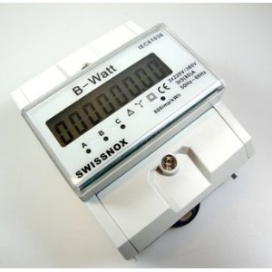
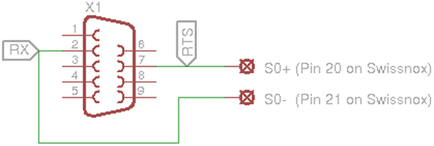
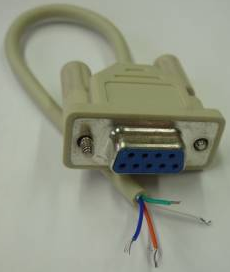

Energy meter
You need a energy meter with S0 interface, best for 3 phases.

Serial port
If your computer not more have a serial port (like mine), you need a USB serial adapter.
The best choice is an adapter with a FTDI / FT232RL chip set.
Digitus DA-70156 USB to Serial Adapter, USB 2.0
Connect
Connect your S0 port like this to your serial interface:

During prototyping is a gender changer (female/female) recommended.
Or you recycle an old serial mouse cable...

Created with the Personal Edition of HelpNDoc: Easy EPub and documentation editor